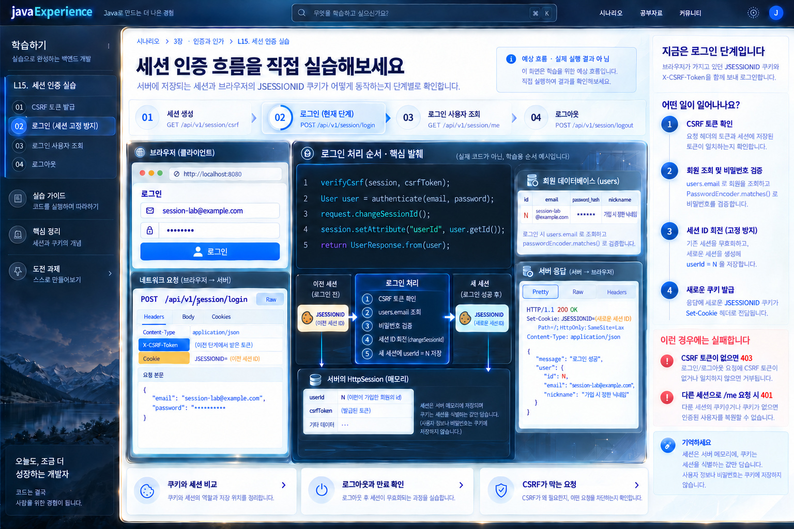

L15 · JWT 다음 선택 실습
다음 요청에 비밀번호를 안 보냈는데 어떻게 같은 사람인 줄 알까요?
서버가 기억하는 로그인 상태를 쿠키로 이어 보는 실습입니다.
첫 요청이메일·비밀번호로 로그인
→다음 요청비밀번호 없이 내 정보
- 만들 것
- 세션 로그인과
/api/v1/session/me연결 - 먼저 보낼 것
GET /api/v1/session/csrf
10-4 JWT 완료 후, 별도 project DB 작업 브랜치에서 진행합니다.
서비스 만들기 › 선택 심화 실습 › L15
L15 · JWT 다음 선택 실습
서버가 기억하는 로그인 상태를 쿠키로 이어 보는 실습입니다.
/api/v1/session/me 연결GET /api/v1/session/csrf10-4 JWT 완료 후, 별도 project DB 작업 브랜치에서 진행합니다.
L15 · 시작 전에 준비
가입에서 받은 회원 id를 이후 세션·JWT 두 방식에 계속 사용합니다.
아래에서 N은 이 응답 id입니다. curl은 저장소 밖의 임시 폴더에서 실행하고, JWT·세션 ID·CSRF 원문은 이 페이지에 입력하지 마세요.
L15 · 첫 세션 요청
getSession(true)가 새 세션을 만들지만 아직 로그인한 회원 id는 없습니다.
curl -i -c session-before.jar {{BASE}}/api/v1/session/csrf실제 쿠키·토큰 값을 URL, 로그, 이 학습 페이지에 복사하지 않습니다.
L15 · 세션 로그인
CSRF 검증이 먼저 통과하면 이메일·비밀번호로 회원을 찾습니다.
curl -i -b session-before.jar -c session-after.jar -H 'Content-Type: application/json' -H 'X-CSRF-Token: TOKEN' -d '{"email":"session-lab@example.com","password":"password1234"}' {{BASE}}/api/v1/session/loginTOKEN 자리에는 앞 응답 값을 터미널에서만 넣으세요. 이 페이지는 비밀값을 받지 않습니다.
L15 · 로그인 성공 뒤
request.changeSessionId()가 로그인 전 식별자를 버리고 새 식별자를 발급합니다.
A와 B는 실제 값이 아니라 서로 달라야 하는 두 식별자의 기호입니다. 로컬 session-before.jar와 session-after.jar의 값을 직접 대조하고, 원문 값을 화면에 붙여 넣지 마세요.
L15 · 같은 쿠키로 내 정보
getSession(false)로 기존 세션만 읽고, 그 안의 userId로 현재 users 행을 다시 조회합니다.
curl -i -b session-after.jar {{BASE}}/api/v1/session/meJSESSIONID는 회원 번호가 아닙니다. 세션 속성의 id로 회원을 찾습니다.
L15 · 쿠키가 다를 때
쿠키가 없거나 다른 jar라면 getSession(false)로 로그인한 세션을 얻지 못합니다.
curl -i {{BASE}}/api/v1/session/meL15 · CSRF 실패
로그인 요청에 쿠키가 있어도 별도 X-CSRF-Token이 없으면 상태를 바꾸지 않습니다.
curl -i -b session-before.jar -c session-failed.jar -H 'Content-Type: application/json' -d '{"email":"session-lab@example.com","password":"password1234"}' {{BASE}}/api/v1/session/loginL15 · 세션 로그아웃
로그인한 쿠키와 올바른 CSRF 헤더를 보내야 session.invalidate()까지 갑니다.
curl -i -X POST -b session-after.jar -H 'X-CSRF-Token: TOKEN' {{BASE}}/api/v1/session/logoutCSRF가 없거나 틀리면 403이고 세션을 유지합니다. 오래된 쿠키를 다시 보내도 회원으로 인정하지 않습니다.
L15 · 유휴 만료
실습용 짧은 timeout을 설정하고 마지막 접근 뒤의 유휴 시간을 관찰합니다.
curl -i -b session-after.jar {{BASE}}/api/v1/session/me앞에서 로그아웃했다면 /csrf와 /login을 다시 실행해 새 로그인 jar를 만든 뒤 기다리세요. 실측하지 않은 초 수를 결과로 쓰거나 앱 코드에 별도 시각 덧셈 로직을 만들지 않습니다.
L15 · 두 방식의 수명
같은 회원의 쿠키와 JWT를 각각 보내 두 인증 상태를 비교합니다.
curl -i -b session-after.jar {{BASE}}/api/v1/session/mecurl -i -H 'Authorization: Bearer JWT_FROM_10_4' {{BASE}}/api/v1/users/me두 명령의 실제 결과는 각각 터미널에서 확인하세요. JWT가 이미 만료됐다면 200을 기대하지 않습니다.
L15 · 쿠키와 CSRF
쿠키의 자동 전송과 별도 헤더 검증은 다른 역할입니다.
Origin/CORS만으로 CSRF 검증을 대체하지 않습니다. 세션·CSRF 값을 URL·로그·화면 저장소에 넣지 마세요.
이미지는 흐름 설명용입니다. 실제 쿠키·CSRF·회원 id는 로컬 응답에서 확인하세요.
01-session-scenario00-preparation02-anonymous-csrf07-csrf-failure03-session-login04-session-id-rotation05-session-me06-other-cookie08-logout10-jwt-session-lifetime09-idle-timeout11-cookie-csrf
원본 크기로 보기 ↗선택 실습 · 10-4 JWT 로그인을 끝낸 별도 project DB 작업 브랜치에서 진행 · Spring MVC + Servlet
HttpSession
같은 사용자가 두 번 요청한다. 첫 요청은 이메일과 비밀번호를 보낸다. 두 번째 요청에는 비밀번호가 없다. 서버는 어떻게 같은 사람인지 알아볼까? F2의 방문 횟수 실습은 세션이 값을 기억하는 것을 보여 줬다. 여기서는 그 값을 로그인한 회원 id로 바꾸고, 로그인·내 정보·로그아웃·만료까지 직접 구현한다.
10-4의 JWT 구현을 먼저 끝내고, 같은 project DB와 회원을 쓰는 별도 경로에서 비교한다. 기존 JWT 인터셉터는 /api/v1/session/**를 제외해 세션 요청을 Bearer 토큰 없이 처리하게 한다. 이 실습의 브라우저는 Authorization 대신 JSESSIONID 쿠키를 자동으로 보내며, 서버는 자기 세션 저장소에서 회원 id를 찾는다. 로그인 과정에서만 users를 이메일로 찾고 BCrypt 해시와 비밀번호를 비교한다. /me는 세션의 id를 근거로 현재 회원을 DB에서 다시 읽는다. 세션 id 자체를 회원 id나 비밀번호로 쓰지 않는다.
한 데이터로 이어서 본다. POST /api/v1/users로 이메일 session-lab@example.com을 가입시키고 실제 응답 id를 기록한다. 먼저 완성한 10-4의 POST /api/v1/auth/login으로 이 회원의 JWT도 발급받아 둔다. 아래에서 N은 가입 응답의 id이며 고정값이 아니다.
| 순서 | 요청 | 기대하는 관찰 |
|---|---|---|
| 준비 | 같은 회원의 POST /api/v1/auth/login |
200 {accessToken, expiresIn: 3600}. 뒤의 세션 로그아웃과 비교할 JWT를 기록 |
| 1 | GET /api/v1/session/csrf |
익명 세션의 JSESSIONID 쿠키와 무작위 csrfToken. 아직 로그인한 회원 없음 |
| 2 | 같은 쿠키와 CSRF 헤더로 POST /api/v1/session/login |
200, 회원 id N, 로그인 전과 다른 세션 id. 응답에 비밀번호·해시 없음 |
| 3 | 새 쿠키로 GET /api/v1/session/me |
200, DB의 N과 이메일·닉네임. 비밀번호를 다시 보내지 않음 |
| 4 | 다른 쿠키 jar 또는 쿠키 없이 /me |
401. 기존 jar의 로그인은 유지 |
| 5 | 새 쿠키와 CSRF 헤더로 POST /api/v1/session/logout |
204. 같은 쿠키로 /me는 401 |
| 6 | 다시 로그인한 뒤 짧은 실습 만료 시간이 지남 | /me 401. 기간은 테스트용 설정에 따르며 특정 초를 실측값처럼 쓰지 않음 |
세션 로그아웃 뒤에도 앞 단계에서 발급한 JWT가 만료 전에는 계속 유효할 수 있음을 예측한 뒤 같은 회원의 JWT로 /api/v1/users/me를 요청해 확인한다.
이 실습만의 /api/v1/session/** 경로를 사용한다. 기존 가입·JWT 경로는 교체하지 않는다. 10-3에서 만든 UserRepository, PasswordEncoder, 공통 응답·오류 틀을 재사용한다. UserService.me의 DB 조회와 반환 DTO는 재사용할 수 있다. 실습용 프로필에서 단일 서버·메모리 세션으로 시작한다.
GET /csrf: request.getSession(true)로 익명 세션을 만들고, 예측하기 어려운 CSRF 토큰을 한 번 생성해 세션에 저장한 뒤 응답한다. 쿠키에는 세션 id만 둔다. 토큰·세션 id를 서버 로그에 남기지 않는다.POST /login: 같은 쿠키의 세션과 X-CSRF-Token을 확인한다. 토큰이 없거나 다르면 403이며 비밀번호 검사는 시작하지 않는다. 성공하면 이메일을 strip().toLowerCase(Locale.ROOT)로 정규화해 users.email로 찾고 PasswordEncoder.matches로 검증한다. 없는 이메일과 틀린 비밀번호는 같은 401 문구다. 비밀번호 규칙은 가입 때의 길이 규칙을 다시 적용하지 않고 공백 여부만 본다. 성공한 기존 익명 세션에 request.changeSessionId()를 적용해 세션 id를 회전하고, 세션 속성에 userId=N을 저장한다. CSRF 토큰은 같은 세션의 속성으로 이어진다.GET /me: getSession(false)로 이미 존재하는 세션만 찾는다. userId가 없으면 401이고 새 세션을 만들지 않는다. 있으면 users.id로 회원을 다시 조회해 {id,email,nickname}을 반환한다. 조회할 수 없는 회원도 401로 처리한다.POST /logout: 로그인 세션과 CSRF 헤더를 확인하고 session.invalidate()한다. 응답은 204다. 클라이언트의 오래된 쿠키로 다시 와도 회원으로 인정하지 않는다. 토큰이 틀리면 403이며 세션은 유지한다.userId를 복구하지 못함을 확인한다. 요청이 오지 않은 시간을 기준으로 한다. 시스템 시간을 코드에서 직접 더해 비교하는 별도 만료 로직을 만들지 않는다.세션 쿠키는 HttpOnly, SameSite=Lax를 확인한다. 로컬 HTTP의 Secure와 배포 HTTPS의 Secure 차이를 기록한다. CSRF 보호는 브라우저가 쿠키를 자동으로 보내는 데서 나온다. Origin 또는 CORS 설정만으로 이 토큰 검사를 대체하지 않는다. 세션·CSRF 문자열은 URL 쿼리, 로그, 화면 저장소에 넣지 않는다. 10-4의 401 WWW-Authenticate: Bearer 처리가 세션 경로에 잘못 붙는다면 인증 방식에 따라 전역 오류 처리를 나눈다.
Spring Security를 사용하는 운영 앱의 인증 필터·세션 저장/복원·로그아웃은 S12 보안 구조에 따로 있다. 이 실습은 Servlet 세션의 경계를 직접 관찰하기 위한 작은 구현이다. 분산 서버·Redis 세션은 여기의 합격 조건이 아니다.
실습 서버 주소는 예시다. 쿠키 jar 파일은 작업 폴더의 임시 파일로 두고 버전 관리에 넣지 않는다. 아래 명령의 TOKEN과 N은 실제 응답 값으로 대체한다.
# 이미 10-3으로 회원을 만든 뒤
curl -i -c session-before.jar http://localhost:8080/api/v1/session/csrf
curl -i -b session-before.jar -c session-after.jar \
-H 'Content-Type: application/json' -H 'X-CSRF-Token: TOKEN' \
-d '{"email":"session-lab@example.com","password":"password1234"}' \
http://localhost:8080/api/v1/session/login
curl -i -b session-after.jar http://localhost:8080/api/v1/session/me
curl -i http://localhost:8080/api/v1/session/me
curl -i -X POST -b session-after.jar -H 'X-CSRF-Token: TOKEN' \
http://localhost:8080/api/v1/session/logout
curl -i -b session-after.jar http://localhost:8080/api/v1/session/me요청마다 Set-Cookie가 반드시 다시 온다고 가정하지 않는다. -b·-c jar의 실제 JSESSIONID 값을 로컬에서만 비교한다. 로그인 전 id와 후 id는 달라야 하고, 로그인 후 /me의 응답 회원 id는 가입 응답 id와 같아야 한다.
실패도 만든다. CSRF 헤더 없는 로그인·로그아웃은 403이고 세션의 인증 상태가 바뀌지 않아야 한다. 틀린 비밀번호는 401이지만 회원 존재 여부를 메시지로 구별할 수 없어야 한다. 다른 jar로 /me를 보내면 401이다. 로그아웃 뒤의 옛 쿠키도 401이다. 서버를 재시작하고 메모리 세션이 사라지는 것을 관찰할 수 있지만, 테스트를 위해 기존 DB를 초기화하지 않는다.
N이 로그인·/me의 DB 조회·응답까지 이어지고 비밀번호 원문이나 해시가 응답에 없다./me가 익명 호출에 새 세션을 만들지 않는다.코드 답안을 바로 복사해 넣는 것보다, 먼저 실패 결과를 예측하고 본인이 구현한 HTTP·쿠키·DB 증거로 설명한다. 다음은 10-4 JWT 로그인과 비교한다.